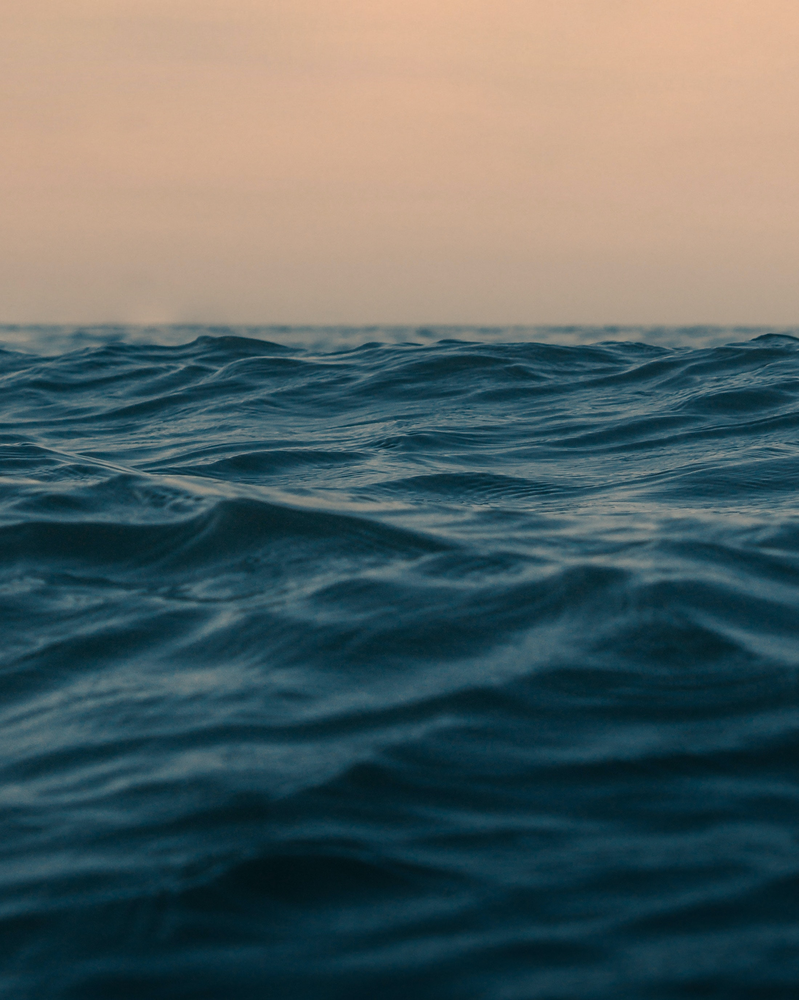

<div class="container">
    <div class="row mt-5 wrap">
        <div class="col-md-6 col-12 image-wrap">
            
        </div>
        <div class="col-md-6 col-12 bio-wrap">
            <p>Nato a Palermo, classe millenovecentonovantotto,
                ho studiato al liceo classico e per cinque lunghi anni ho vissuto nella mia tranquilla campana di vetro da scolaro impegnato. A diciotto anni poi ho scoperto il mondo... In tutti i sensi. Comincio a scrivere, comincio l'università, comincio a capire che preferisco i ragazzi alle ragazze. Dopo un anno destinatomi dal fato a giurisprudenza, mi iscrivo alla facoltà di lingue dove attualmente studio, insieme all'inglese, anche l'arabo. Sogno di trovare la pietra filosofale per la letteratura del nuovo millennio, più che un sogno direi un arduo obiettivo. Cerco di tradurre in parole un'ansia epocale, che solo chi è nato a partire dalla fine del secolo scorso può capire: scrivo per me e per i giovani come me. Nel mio domani vedo tanto inchiostro e tanto ticchettío sulla tastiera, affiancato a parole cacofoniche dal suono incomprensibile. Comunque sia, è inutile parlare di futuro quando il batter d'ali di una farfalla in Brasile potrebbe provocare un tornado in Texas.</p>
        </div>
    </div>
</div>
